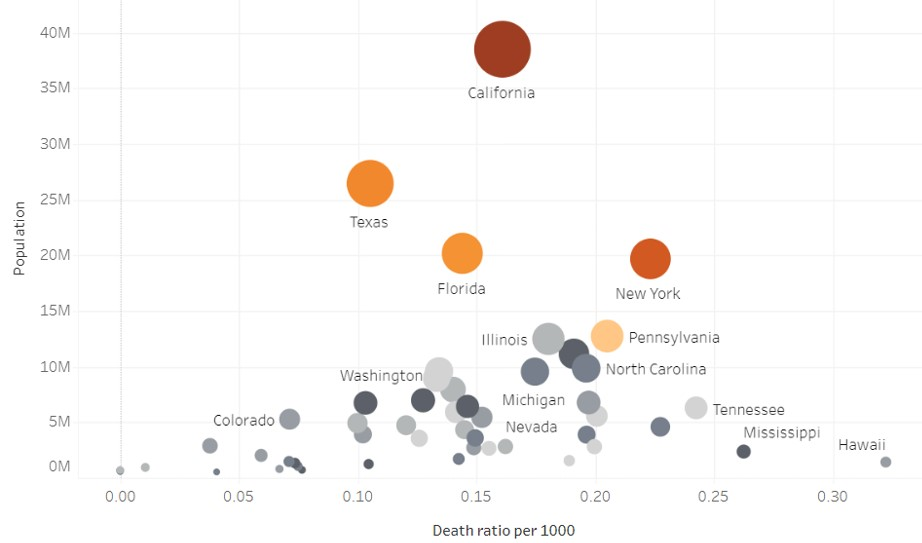
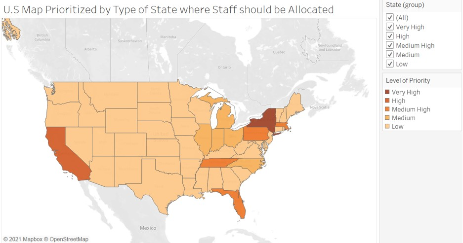
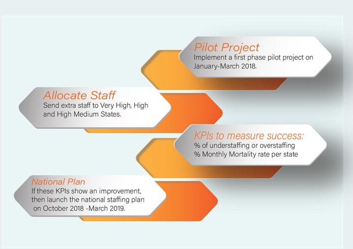

Preparing for Influenza Season - Tableau Project
Background:
The United States has an influenza season where more people than usual suffer from the flu. Some people, particularly those in vulnerable populations, develop serious complications and end up in the hospital. Hospitals and clinics need additional staff to adequately treat these extra patients. The medical staffing agency provides this temporary staff.
Objective
As a Data Analyst I will submit a recommendation, present insights to stakeholders in an easily consumable format to the medical agency to determine when to send staff to each state for the flu season of 2017.
Goal
Using storytelling create a report in Tableau telling the analytical story.
Context
This is a project I did as part of a course in data analytics at Career Foundry.
Data Sets
1. Influenza deaths by geography, time, age, and gender Source: CDC Download Data Set
2. Population data by geography Source: US Census Bureau Download Data Set 3. Counts of influenza laboratory test results by state (survey) Source: CDC (Fluview) Download Influenza Visits Data Set Download Lab Tests Data SetSteps for Data Preparation and Data Analysis:
| Step | Description |
|---|---|
| 1 | Outline the possible bias from each of the datasets |
| 2 | Data Profiling and data cleaning (quality and integrity checks) |
| 3 | Data Integration and transformation |
| 4 | Formulate a Hypothesis test to compare if there is a significant difference regarding certain groups |
| 5 | Calculate the variance and standard deviation for key variables |
| 6 | Identify variables with a potential relationship and test for a correlation. Example, The correlation between deaths and population over 85+. |
Insights and Data Visualization
This graph suggests that the size of the population might play a key role in defining where most of the deaths due to Influenza occur.
Here we see how the additional staff should be allocated balancing the effect of size of population and death rate. Given this, the priority will be placed on states with population over 6 million and a Death Ratio x 1000 higher than 0.15. This is how we can categorize states by their level of priority:
Final Recommendations
Below are is the recommendation on how to implement gradually and successfully the allocation of additional staff.
